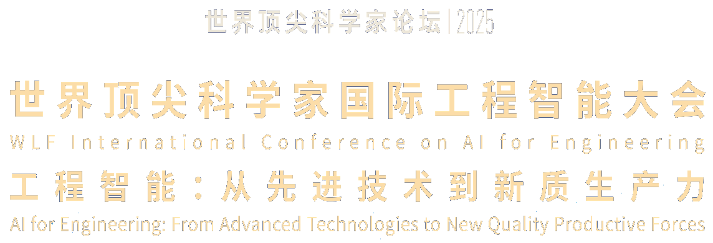

2026
投稿开始
征稿启动
论文海报获奖名单揭晓。 论文海报颁奖仪式在上海临港举行。本届Workshop共收到57篇投稿，经20位专家独立评审（4位来自企业界、16位来自学术界），20篇作品入选。
最终评出2篇最佳论文、7篇最佳论文候选及11篇杰出论文。两篇最佳论文并列第一，第一单位分别为南京理工大学和中国科学技术大学。
查看完整获奖名单（PDF）IMPORTANT DATES
从投稿到展示交流
2026
征稿启动
2026
投稿已截止
2026
20篇作品入选
2026
线上与现场展示交流
2026
18:05–18:15 颁奖
投稿开始时间：2026年9月12日；投稿截止时间：2026年10月15日23:59（北京时间，UTC+8）；入选通知发布日期：2026年10月20日。
01 / Workshop 征集回顾
本届投稿已于2026年10月15日截止，以下保留征集规则供查阅。
本届Workshop面向高校、科研机构及产业界征集工程智能研究成果，共收到57篇投稿，经专家评审入选20篇，并以海报形式展示。
征集方向包括以下五个方面：
入选海报于10月30—31日展示，论文海报颁奖仪式于10月31日举行。
02 / Acceptance & awards
最终评选结果：20篇作品入选，其中最佳论文奖2篇、最佳论文候选奖7篇、杰出论文奖11篇。颁奖仪式已于10月31日举行。
57篇投稿 → 20篇入选
本届Workshop共收到57篇投稿，经专家评审入选20篇，并于10月30—31日进行海报展示。20篇入选海报均可获得入选证书。
20位专家独立评审
评审专家包括4位企业界专家和16位学术界专家。论文海报颁奖仪式于10月31日在上海临港举行，议程安排为18:05–18:15。
两篇论文并列第一
涵盖学术研究与产业技术报告
覆盖工程智能多个研究方向
03 / Conference program
主论坛议程如下，所有时间均为北京时间（UTC+8）。10月31日主论坛为14:00–18:20，论文海报颁奖为18:05–18:15。
主持人介绍海报征集情况与展示安排；领导简短致辞（可选）。
海报线上与现场同步展示，现场作者在场讲解；未到场作者由主办方代为打印上墙。
活动总结。
海报展示安排为10月30—31日，集中交流时间为10月30日14:00–16:30。10月31日继续展示，论文海报颁奖安排在主论坛18:05–18:15。
李宏智
郑庆华、杜宁凯
华先胜
《工程智能白皮书2.0》发布；《工程智能导论》发布；第二届国际工程智能大赛启动。
蔡达成
尤里·涅斯捷罗夫
帕斯卡尔·梅耶
诺加·阿隆
张亚勤
梅涛
施尧耘
戴金权
高岳
赵鸿宇
主持人：华先胜
圆桌嘉宾：杜宁凯、乔宇、诺加·阿隆、马万经、俞凯、罗睿锋
颁发最佳论文奖2篇、最佳论文候选奖7篇及杰出论文奖11篇。
10月31日继续展示海报，18:05–18:15举行论文海报颁奖，18:15–18:20进行大会总结与合影。
ABOUT THE CONFERENCE
2026国际工程智能大会是世界顶尖科学家论坛的下辖分会，由上海世界顶尖科学家发展基金会统筹举办。
国际工程智能大会汇聚学术界与产业界，交流人工智能在工程领域的研究进展与实践经验，推动跨学科合作。
2025年大会于上海临港举行，围绕“工程智能：从先进技术到新质生产力”展开交流，并发布《工程智能白皮书》。
阅读同济大学2025大会报道
ORGANIZATION